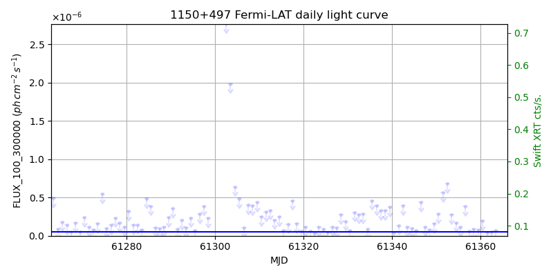
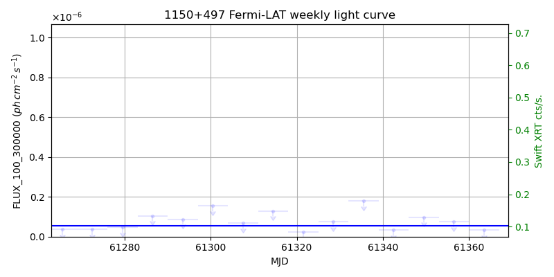
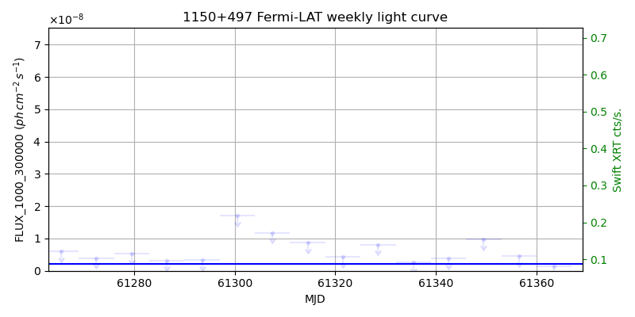

LAT Lightcurve site: https://fermi.gsfc.nasa.gov/ssc/data/access/lat/msl_lc/source/1150p497
Swift site: https://www.swift.psu.edu/monitoring/source.php?source=SBS1150+497
NED: Query
Time of last update of this page: UT: 2026-11-20 16:23 (MJD: 61364.683)
| Property | Value |
|---|---|
| R.A. | 11:53:24.48 |
| Dec. | 49:31:08.4 |
| z | 0.334 |
| 3FGL SpectrumType | PowerLaw |
| 3FGL PL Index | 2.38 |
| 3FGL Flux_100_300000 | 5.40e-08 1 / (s cm2) |
| 3FGL Flux_1000_300000 | 2.26e-09 1 / (s cm2) |
| 3FGL Flux >200 GeV | 1.52e-12 1 / (s cm2) |
| 3FGL Extrap. Crab >200 GeV | 0.01 |
| 3FGL Flux After EBL Absorption >200GeV | 4.55e-13 1 / (s cm2) |
| 3FGL EBL Crab Fraction >200GeV | 0.00 |

| MJD | dMJD | Flux | dFlux | Frac3FGL | FracCrab>200GeV | EBLFracCrab>200GeV |
|---|---|---|---|---|---|---|
| 61359.50 | 0.50 | 7.93e-08 | 0.00e+00 | 0.00 | 0.00 | 0.00 |
| 61360.50 | 0.50 | 1.93e-07 | 0.00e+00 | 0.00 | 0.00 | 0.00 |
| 61361.50 | 0.50 | 4.31e-08 | 0.00e+00 | 0.00 | 0.00 | 0.00 |
| 61362.50 | 0.50 | 5.30e-08 | 0.00e+00 | 0.00 | 0.00 | 0.00 |
| 61363.50 | 0.50 | 7.02e-08 | 0.00e+00 | 0.00 | 0.00 | 0.00 |

| MJD | dMJD | Flux | dFlux | Frac3FGL | FracCrab>200GeV | EBLFracCrab>200GeV |
|---|---|---|---|---|---|---|
| 61328.50 | 3.50 | 7.53e-08 | 0.00e+00 | 0.00 | 0.00 | 0.00 |
| 61335.50 | 3.50 | 1.80e-07 | 0.00e+00 | 0.00 | 0.00 | 0.00 |
| 61342.50 | 3.50 | 3.31e-08 | 0.00e+00 | 0.00 | 0.00 | 0.00 |
| 61349.50 | 3.50 | 9.71e-08 | 0.00e+00 | 0.00 | 0.00 | 0.00 |
| 61356.50 | 3.50 | 7.61e-08 | 0.00e+00 | 0.00 | 0.00 | 0.00 |
| MJD | dMJD | Flux | dFlux | Frac3FGL | FracCrab>200GeV | EBLFracCrab>200GeV |
|---|---|---|---|---|---|---|
| 61359.50 | 0.50 | 1.69e-08 | 0.00e+00 | 0.00 | 0.00 | 0.00 |
| 61360.50 | 0.50 | 1.84e-08 | 0.00e+00 | 0.00 | 0.00 | 0.00 |
| 61361.50 | 0.50 | 1.35e-08 | 0.00e+00 | 0.00 | 0.00 | 0.00 |
| 61362.50 | 0.50 | 7.87e-09 | 0.00e+00 | 0.00 | 0.00 | 0.00 |
| 61363.50 | 0.50 | 9.32e-09 | 0.00e+00 | 0.00 | 0.00 | 0.00 |

| MJD | dMJD | Flux | dFlux | Frac3FGL | FracCrab>200GeV | EBLFracCrab>200GeV |
|---|---|---|---|---|---|---|
| 61328.50 | 3.50 | 8.07e-09 | 0.00e+00 | 0.00 | 0.00 | 0.00 |
| 61335.50 | 3.50 | 2.51e-09 | 0.00e+00 | 0.00 | 0.00 | 0.00 |
| 61342.50 | 3.50 | 3.75e-09 | 0.00e+00 | 0.00 | 0.00 | 0.00 |
| 61349.50 | 3.50 | 9.63e-09 | 0.00e+00 | 0.00 | 0.00 | 0.00 |
| 61356.50 | 3.50 | 4.58e-09 | 0.00e+00 | 0.00 | 0.00 | 0.00 |
--------------------------------------------------------- Using user-supplied coords: 11:53:24.48 49:31:08.4 2000 --------------------------------------------------------- FLWO UT night of: 2026-11-21 Local Sid. @ Midnight: 03:37 Sunset (-15.0) (local, UT): 18:33 01:33 Sunrise (-15.0) (local, UT): 05:47 12:47 Moonrise (local, UT): Moonset (local, UT): 03:40 10:40 Moon phase: 0.85 --------------------------------------------------------- AzTime LSID UT Obj_el Obj_az Mn_el Mn_az Sep. --------------------------------------------------------- 18:33 22:09 01:33 -5.3 343.1 47.9 117.4 122.6 19:03 22:39 02:03 -7.2 347.7 53.3 125.0 122.5 19:33 23:09 02:33 -8.3 352.5 58.2 134.7 122.3 20:03 23:39 03:03 -8.9 357.4 62.3 146.9 122.2 20:33 00:09 03:33 -8.9 2.4 65.1 162.1 122.0 21:03 00:39 04:03 -8.4 7.3 66.3 179.7 121.9 21:33 01:09 04:33 -7.2 12.1 65.4 197.5 121.7 22:03 01:39 05:03 -5.4 16.8 62.9 213.2 121.6 22:33 02:09 05:33 -2.2 21.2 59.0 225.9 121.4 23:03 02:39 06:03 -0.4 25.4 54.2 235.9 121.3 23:33 03:09 06:33 2.2 29.3 48.9 243.9 121.1 00:03 03:39 07:03 5.4 33.0 43.2 250.4 121.0 00:33 04:10 07:33 8.9 36.3 37.3 255.9 120.8 01:03 04:40 08:03 12.8 39.2 31.2 260.7 120.7 01:33 05:10 08:33 17.0 41.9 25.1 265.1 120.5 02:03 05:40 09:03 21.4 44.2 19.0 269.2 120.4 02:33 06:10 09:33 25.9 46.2 12.9 273.0 120.2 03:03 06:40 10:03 30.6 47.8 6.8 276.9 120.1 03:33 07:10 10:33 35.4 49.0 1.0 280.7 119.9 04:03 07:40 11:03 40.2 49.8 -4.9 284.7 119.8 04:33 08:10 11:33 45.1 49.9 -11.1 288.8 119.6 05:03 08:40 12:03 50.0 49.3 -16.8 293.2 119.5 05:33 09:10 12:33 54.8 47.8 -22.3 298.1 119.3 05:47 09:25 12:47 57.0 46.6 -24.8 300.5 119.2 --------------------------------------------------------- Dark hours >55 deg.: 0.22 srcstart (UT): 2026-11-21 12:33 srcend (UT): 2026-11-21 12:46